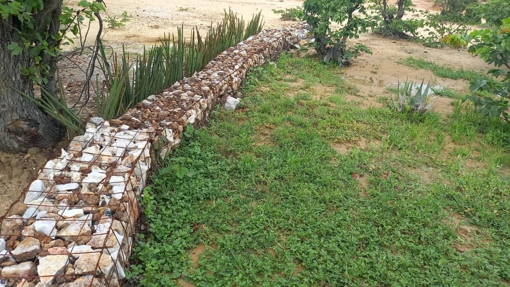

Gabion
Description
A gabion is a container for rocks used where the flow of water would overtop or wash away other soil retention and water infiltration systems. Gabions are usually constructed across existing gulleys where there is a high flow of water and thus must be firmly anchored to be kept in place. A gabion comprises a rectangular frame or cage typically formed from 2.4 x 6 metre weldmesh sheets with 4 mm wire and 100 x 100 mm apertures. Suitable dimensions of the frames are a width of 0.6 m and 0.8 m height. The frames are filled with stones and rocks and closed at the top with an additional strip of weldmesh to ensure the rocks remain in place. The frames are placed in a shallow trench across a waterway where erosion is occurring and extend beyond the sides of the waterway to ensure water does not flow around the ends of the gabion, which would then wash away soil, defeating the purpose of the gabion and increasing the width of the gully. Where the gully is deep, two or three gabions may be placed on top of each other in a stepped formation. The gabion reduces the velocity of the water as it flows between the loose rock in the gabion so that the sediment in transport is deposited upstream of the gabion.
In this way gabions are effective erosion control structures that accumulate sediment to fill up gulleys and prevent the siltation of dams and weirs. They are particularly useful in dam catchment and badly degraded areas. They allow water to flow through them, reducing water runoff velocity thereby increasing infiltration which promotes soil moisture retention in the catchment area. Over time, the growth of vegetation within the catchment area enhances the erosion control properties of gabions, ultimately contributing to land reclamation.
Method:
Approximate Dimensions (in metres):
Note: